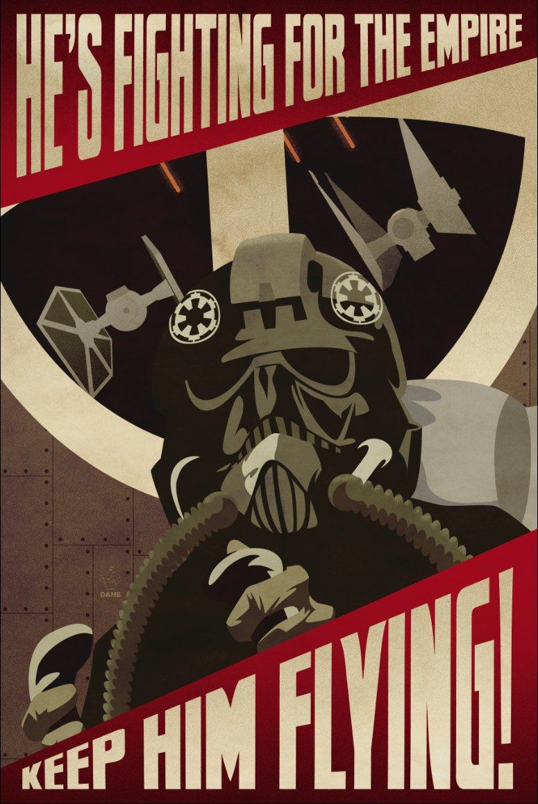

“Oh, the empire were Nazis!” “They enforced their will upon others and killed who didn’t!” Well, to quote Dwight Schrute: “False”. They cared about the Galaxy. As I mentioned here, they cared about security and had police forces to make sure the galaxy was safe. Another thing the Empire did was liberate the poor clones who were controlled by the Republic. With the Empire, they were all granted freedom. Now, let’s talk about the Death Star. “It was a tool used for genocide, it was a weapon” many argue. But that isn’t all true. The Death Star was again built to maintain order within the galaxy. It wasn’t solely created to show power. Yes, the Death Star blew up Alderaan, but it was Rebel (or should I say, terrorist) base in the end. The Death star also created Jobs. Many collaborated to build the Death star, and it was also home to many people working. However, the rebels came, and blew up the home of many, and killed many as well.